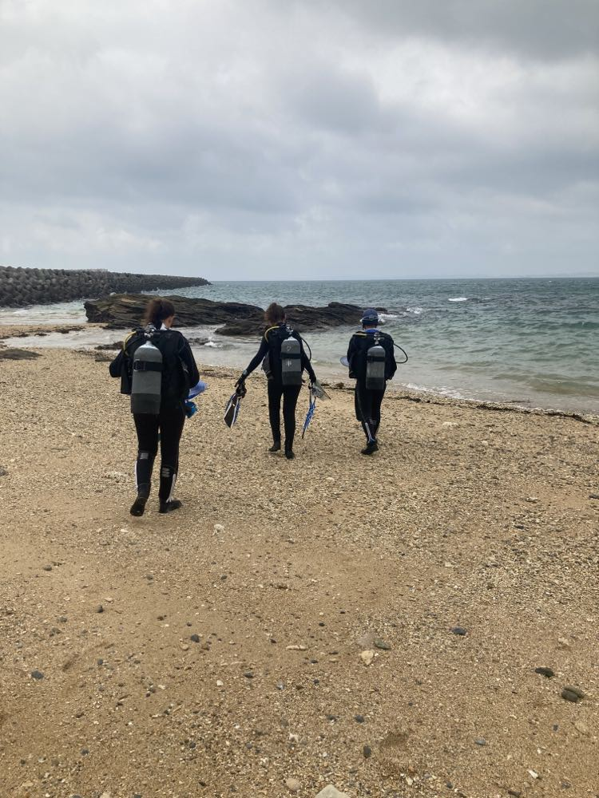
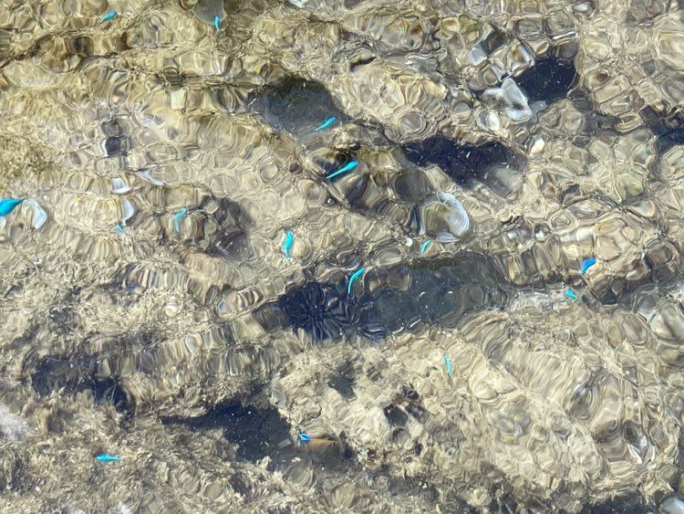

Emma Gairin' Research Portfolio
- I am a 4th-year PhD candidate working with the Marine Eco-Evo-Devo Unit at the Okinawa Institute of Science and Technology on the subtropical island of Okinawa, in Japan.
- My current research focuses on the links between the environment and gene expression levelsstrong> in the blue damselfish Chrysiptera cyanea.
As a first step for this research, I have assembled and annotated the genome of this iconic Okinawan fish (find the pipeline here).
I am now working on a large dataset to link environmental conditions with gene expression patterns in juvenile and adult fish, and have already presented my research at various Japanese and international conferences. Stay tuned for the upcoming publications!
- Prior to joining my current lab and becoming an 'omics enthusiast, I obtained degrees in Earth Science and Ecology from the University of Edinburgh and Ecole Normale Superieure in Paris.
During that time, I participated in multiple research projects in New Caledonia and French Polynesia, focusing on coral reef ecosystems, notably looking at marine protected areas but also at historical coastline changes and links between human activities and fish populations (full list of research output).
- As I found the patterns we observed between fish communities and human activities particularly interesting and relevant, I sought to dig deeper into the biological mechanisms through which fish respond to their environment -- which I am now doing for my PhD using wild fish transcriptomes.

